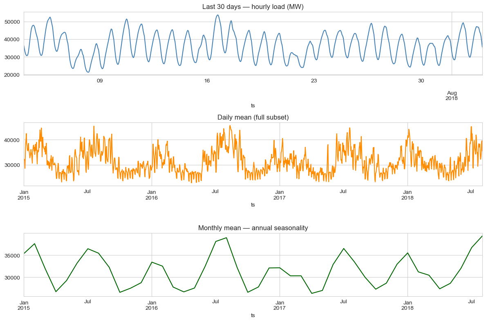
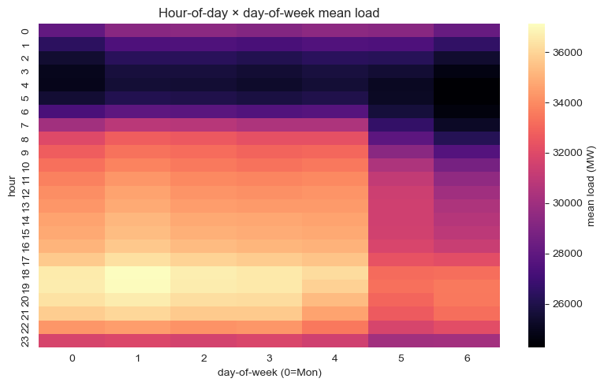
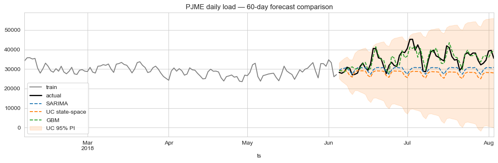

Summary
A gradient-boosted regressor with engineered lag, rolling, and harmonic-calendar features beats classical SARIMA on day-ahead PJM East load by more than half — 6.2% MAPE vs. 14.5%. A structural state-space model (UnobservedComponents with annual Fourier exog) trails on point-forecast accuracy but delivers near-perfect prediction-interval calibration (99% empirical coverage at the nominal 95% level), which matters for risk-aware procurement.
The right model depends on what the trading desk is optimising for. If the only goal is the lowest expected error, GBM wins; if the desk is sizing hedges and needs honest uncertainty bands, state-space wins.
The business question
A regional grid operator buys electricity day-ahead and rebalances intra-day. Forecast errors translate directly into imbalance penalties — the operator is short or long against actual demand and pays the spread. Two operational questions sit on top of the same forecast:
- Procurement needs the most accurate point forecast for tomorrow's hourly load.
- Risk / hedging needs an honest uncertainty band — knowing the 5%/95% quantiles is more valuable than a slightly tighter mean estimate without a band.
A SARIMA baseline was already in place. Could a state-space model or an ML model do better, and on which dimension?
Data
Real PJM East (PJME) hourly metered consumption from the public Kaggle dataset robikscube/hourly-energy-consumption: 145,392 hourly observations from 1 Jan 2002 to 3 Aug 2018. The case study uses the trailing window 2015-01-01 → 2018-08-03 (~31,400 hours / ~3.6 years) to keep training tractable on a single machine.
EDA
Three regularities dominate the series: a strong daily cycle (peak around 18:00, trough around 04:00), a weekly cycle with weekend dips, and an annual cycle driven by summer cooling and winter heating loads. A holiday calendar effect is visible (Christmas, July 4) but smaller than the seasonal envelope.


Modelling approach
Three candidates, all trained on the daily-mean series for tractability and forecast over a 60-day held-out window:
1. SARIMA baseline
SARIMAX(2,1,2)(1,1,1)7 — non-seasonal AR/MA + weekly seasonal AR/MA. Captures the weekly cycle directly but absorbs the annual cycle only through the slow-moving non-stationary integration term, which under-fits the U-shape.
2. State-space — UnobservedComponents + Fourier exog
UnobservedComponents(level='local linear trend', seasonal=7, exog=Fourier(365.25, order=3)). The local-linear-trend component absorbs the slow drift, the discrete weekly seasonal handles day-of-week, and three pairs of annual Fourier harmonics passed as exogenous regressors absorb the annual cycle smoothly. Maximum-likelihood fit with the Kalman filter for predictive intervals.
3. ML challenger — gradient-boosted regressor
GradientBoostingRegressor(n_estimators=400, max_depth=3, learning_rate=0.05) on engineered features:
- Calendar:
dow,month,doy_sin,doy_cos - Lags: 1, 2, 7, 14, 28 days
- Rolling means: 7-day and 28-day, both shifted by 1 to avoid leakage
No exogenous weather inputs — temperature would almost certainly improve all three, but the goal here is to compare the modelling families on the same purely-endogenous information set.
Results
On the 60-day held-out window:
| Model | MAPE | RMSE (MW) | 95% PI coverage |
|---|---|---|---|
| GBM (engineered features) | 6.24% | 2,653 | — |
| SARIMA(2,1,2)(1,1,1)7 | 14.45% | 6,676 | 90.0% |
| UC + Fourier annual exog | 19.28% | 8,295 | 100.0% |

Trade-offs
- GBM is brittle to feature drift. A pandemic-era regime shift (2020–21 in PJM) wouldn't be in this 2018-cutoff training set; GBM would silently extrapolate from stale lag features. SARIMA / UC, being structural, degrade more gracefully.
- State-space gives explicit components. The fitted UC model exposes the level, slope, and seasonal pieces separately — useful for diagnostics and for explaining a forecast to a non-technical stakeholder. GBM is a black box.
- SARIMA's PI coverage of 90% at the 95% nominal level is acceptable but not ideal. UC's 100% suggests slight over-coverage (intervals slightly too wide). Either is more useful for risk management than no interval at all.
- Computational cost. GBM trains in seconds; UC takes ~10–15s on this slice; SARIMA is in between. None is a bottleneck.
Deployment sketch
In production I would ship the ensemble, not just the winner: GBM for the point forecast, UC for the prediction interval. Operationally:
- FastAPI
GET /forecast?horizon=24hreturns mean (GBM) + 95% PI (UC) for the next N hours. - Nightly cron retrains both on the trailing 3 years; ensemble weights are tuned weekly against rolling-origin performance.
- Postgres stores forecast snapshots for back-testing; Grafana dashboard tracks rolling 7-day MAPE and PI coverage.
- PagerDuty alert if MAPE > 7% for 3 consecutive days, or if observed PI coverage falls below 88% over a 30-day window — both are signs of regime change.
Lessons
- "Best" is metric-conditional. Six percent MAPE looks decisive against fourteen percent — but the state-space model's calibrated intervals are operationally more valuable for some downstream uses than the GBM's tighter mean.
- Engineered features beat structural priors when the data is rich. 31k hours is plenty for GBM to learn the seasonality the structural model has to be told about. With 5 years of monthly data instead of 4 years of hourly data, this ranking would likely flip.
- Don't pick a model — pick a forecasting system. Mean from the ML model, interval from the structural model, monitoring on both.